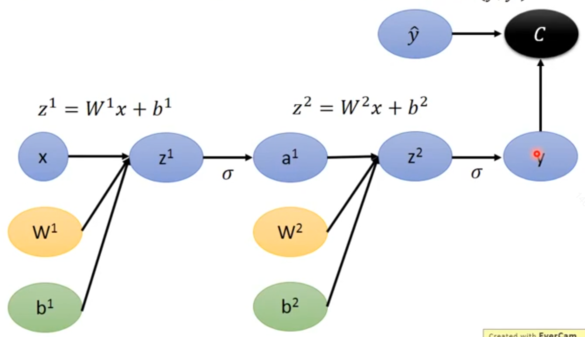

| 损失函数 | ||
| 总代价 | J | |
| 正则项 | 包含所有参数（权重和偏置 | |
| 模型的权重矩阵 | ||
| 模型的偏置参数 | ||
| 程序的输出 | x | |
| 目标输出 | y | |
| 实际输出 | ||
| 网络的深度 | L | |
| 某一层的输出 | 同时也是下一层的输入。 书上用的是h，我有时候会写成a |
|
| 某一层的加权输入 | 书上用的是a，我更喜欢用z |
为了阐明反向传播的上述定义，让我们考虑一个与全连接的多层MLP相关联的特定图。
[success]
这一节是反向传播算法在MLP上的具体应用。
只是主要流程。具体的计算过程涉及到一些数学基础。
算法6.3首先给出了前向传播，它将参数映射到与单个训练样本（输入，目标）相关联的监督损失函数，其中是当提供输入时神经网络的输出。
[success]

算法6.3通过正向传播计算每一层的unit的加权输入z和激活输出h。h_0 = x for l = 1,...,L do: z_k = b_k + W_k.dot(h_(k-1)) h_k = f(z_k) end for y_hat = h_L J = L(y_hat, y) + lambda * omega(theta)
Click to show
{% raw %}
<!-- % alg 6.3 -->
\begin{algorithm}[ht]
\caption{典型深度神经网络中的前向传播和代价函数的计算。
损失函数{% math_inline %}L(\hat{y}, y){% endmath_inline %}取决于输出{% math_inline %}\hat{y}{% endmath_inline %}和目标{% math_inline %}y{% endmath_inline %}（参考\sec?中损失函数的示例）。
为了获得总代价{% math_inline %}J{% endmath_inline %}，损失函数可以加上正则项{% math_inline %}\Omega(\theta){% endmath_inline %}，其中{% math_inline %}\theta{% endmath_inline %}包含所有参数（权重和偏置）。
\alg?说明了如何计算{% math_inline %}J{% endmath_inline %}关于参数{% math_inline %}W{% endmath_inline %}和{% math_inline %}b{% endmath_inline %}的梯度。 为简单起见，该演示仅使用单个输入样本{% math_inline %}x{% endmath_inline %}。
实际应用应该使用小批量。
请参考\sec?以获得更加真实的演示。}
\begin{algorithmic}
\REQUIRE 网络深度， {% math_inline %}l{% endmath_inline %}
\REQUIRE {% math_inline %}W^{(i)}, i \in \{ 1, \cdots, l\}{% endmath_inline %}， 模型的权重矩阵
\REQUIRE {% math_inline %}b^{(i)}, i \in \{ 1, \cdots, l\}{% endmath_inline %}， 模型的偏置参数
\REQUIRE {% math_inline %}x{% endmath_inline %}，程序的输入
\REQUIRE {% math_inline %}y{% endmath_inline %}，目标输出
\STATE {% math_inline %}h^{(0)}=x{% endmath_inline %}
\FOR {{% math_inline %}k=1, \ldots, l{% endmath_inline %}}
\STATE {% math_inline %}a^{(k)} = b^{(k)} + W^{(k)} h^{(k-1)}{% endmath_inline %}
\STATE {% math_inline %}h^{(k)} = f(a^{(k)}){% endmath_inline %}
\ENDFOR
\STATE {% math_inline %}\hat{y} = h^{(l)}{% endmath_inline %}
\STATE {% math_inline %}J = L(\hat{y},y) + \lambda \Omega(\theta){% endmath_inline %}
\end{algorithmic}
\end{algorithm}
{% endraw %}
算法6.4随后说明了将反向传播应用于该图所需的相关计算。
[success]
算法6.4通过反向传播计算每一层的unit的h的偏导、z的偏导、w的偏导、b的偏导。
书上的g有两个用处，为了区分，我把它的两个用处分别用gh和gz gh为损失函数L(\hat y, y)对输出h^l的偏导。
gz为损失函数L(\hat y, y)对加权输入z^l的偏导。
w的偏导为总代价J对权重矩阵W^l的偏导。
b的偏导为总代价J对偏置参数|b^l的偏导。
根据定义计算第L层的情况
第L层的特殊在于根据定义计算第l层的情况
for l = L-1, ..., 1 do:公式中的f'(z^l)是主要的计算量。
计算出来的是一个矩阵，称为Jacobian矩阵。

Click to show
算法6.3和算法6.4是简单而直观的演示。
然而，它们专门针对特定的问题。
现在的软件实现基于之后第6.5.6节中描述的一般形式的反向传播，它可以通过显式地操作表示符号计算的数据结构，来适应任何计算图。
{% raw %}
<!-- % alg 6.4 -->
\begin{algorithm}[htbp]
\caption{深度神经网络中\alg?的反向计算，它不止使用了输入{% math_inline %}x {% endmath_inline %}和目标{% math_inline %}y{% endmath_inline %}。
该计算对于每一层{% math_inline %}k{% endmath_inline %}都产生了对激活{% math_inline %}a^{(k)}{% endmath_inline %}的梯度，从输出层开始向后计算一直到第一个隐藏层。
这些梯度可以看作是对每层的输出应如何调整以减小误差的指导，根据这些梯度可以获得对每层参数的梯度。
权重和偏置上的梯度可以立即用作随机梯度更新的一部分（梯度算出后即可执行更新），或者与其他基于梯度的优化方法一起使用。
}
\begin{algorithmic}
\STATE 在前向计算完成后，计算顶层的梯度：
\STATE {% math_inline %}g \leftarrow \nabla_{\hat{y}} J = \nabla_{\hat{y}} L(\hat{y},y){% endmath_inline %}
\FOR {{% math_inline %}k=l, l-1, \cdots, 1{% endmath_inline %}}
\STATE 将关于层输出的梯度转换为非线性激活输入前的梯度（如果 {% math_inline %}f{% endmath_inline %} 是逐元素的，则逐元素地相乘）：
\STATE {% math_inline %}g \leftarrow \nabla_{a^{(k)}} J = g \odot f'(a^{(k)}){% endmath_inline %}
\STATE 计算关于权重和偏置的梯度（如果需要的话，还要包括正则项）：
\STATE {% math_inline %}\nabla_{b^{(k)}} J = g + \lambda \nabla_{b^{(k)}} \Omega(\theta){% endmath_inline %}
\STATE {% math_inline %}\nabla_{W^{(k)}} J = g \; h^{(k-1)\top} + \lambda \nabla_{W^{(k)}} \Omega(\theta){% endmath_inline %}
\STATE 关于下一更低层的隐藏层传播梯度：
\STATE {% math_inline %}g \leftarrow \nabla_{h^{(k-1)}} J = W^{(k)\top} \; g{% endmath_inline %}
\ENDFOR
\end{algorithmic}
\end{algorithm}
{% endraw %}